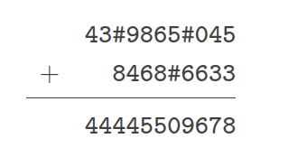
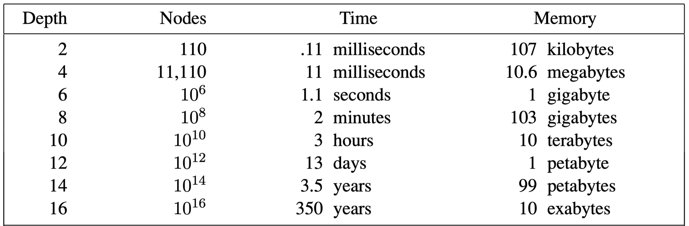

问题求解（三） Open Topic 2 笔记
OT：在DFS和BFS的基础上，形成了很多扩展的搜索算法，例如词典序BFS、双向搜索、最佳优先搜索等，请调研至少2种扩展搜索算法（其中至多1种来自上述例子），讨论适用场景，结合例子介绍算法的设计与分析，与DFS或BFS比较异同并分析优劣。
一步步改造 BFS
BFS 本身可以解决的问题 1
首先分析 BFS 本身可以解决的问题，主要是无权图上的最短路问题。为了方便起见，我们只考虑两点 \(s\) 和 \(t\) 之间的最短路问题。设 \(g(u)\) 表示从 \(s\) 到 \(u\) 的距离。BFS 的算法正确性的核心在于所维护的队列的 \(g(u)\) 单调不减性。实际上，对于一切的一致代价搜索，s正确性的根本保证在于它维护了一个优先队列。
一致代价搜索(UCS)：
定理：在非负权图中，维护一个优先队列（一开始只有 \(s\)），关键词是 \(g(u)\)。每次取出其中关键词最小的点，然后更新其邻点的距离，若更新则入队（注意：不影响原队列中的关键词），第一次 \(t\) 出队时，\(g(t)\) 的值就是最小值。
证明：这是很容易的。首先要注意到，当一个点出队后，它的值不会再改变了（剩下的点的 \(dist\) 都 \(\ge\) 它）。其次，由于是第一次 \(t\) 出队，故之前出队的点都不是 \(t\)，其中可能有与 \(t\) 相邻的点 \(u\)，这些状态也会在队列中被考虑。由于 这个 \(t\) 的状态是队列中所有 \(t\) 状态中最小的，所以是最优的。
在无权图上，BFS 得到的队列其实就是一个优先队列（增加，且只有两种值保证了这一点），保证了算法的正确性。
很多问题可以抽象成无权图的最短路问题，比如编辑距离问题、游戏寻路问题（比如使用三角形网格建模，可以构造出无权图）等。
扩展： 0/1 BFS
如果图中有两种边，一种权为 \(0\)，一种权为 \(1\)，这个时候可以稍微扩展一下，从 \(1\) 边到达的邻点放到队尾，从 \(0\) 边到达的邻点放到队头，这样得到的队列和 BFS 的队列是一模一样的。
在问题中扩展零边是很方便的，比如铁路换乘方案选择中（如果考虑的是站数，也就是无权图），如果可以加入零边，可以对换乘站的处理变得更优雅：每个线路网构成一个子图，换乘站拆成好几个点，这几个点之间用零边连接。
思考题：用原来的 BFS 真的不能够处理有零边的图吗？
事实上是可以的。先只考虑零边，找到图中所有的连通分支，每个连通分支内点之间的距离都是 \(0\)，看作一个点构成新图，然后再考虑 \(1\) 边进行 BFS。
两种不同的搜索问题
第一种，图比较小，这时我们往往可以直接得知图的全貌（比如点数 \(n\)、边数 \(m\) 和图的结构），这时往往可以搜寻整个图，得到关于 \(n\) 和 \(m\) 的算法，比如我们熟知的：BFS 和 DFS 的时间、空间复杂度都是 \(O(n+m)\)。e.g. 常见的寻路问题等。
第二种，图很大（甚至无限大），常常是无法得知图的全貌的，比如由大型迷宫建模而成的图，比如由各种搜索问题建模而成的图。这时，我们用另一种方法描述复杂度：图的分支因子 \(b\) 和搜索所需的层数 \(d\)。比如，在这样的描述中，BFS 的时间、空间复杂度都是 \(O(1+b+b^2+\cdots+b^d)=O(b^d)\)，而 DFS 无法满足完备性和最优性，如果额外限定只搜索 \(d\) 层就返回，那么时间是 \(O(b^d)\)，但空间是 \(O(d)\) 的。e.g. \(n\) 皇后问题、竖式填写等一些经典搜索问题，还有超大迷宫的寻路问题，每次可以扩展的分支数 \(b\) 一般是有上界的，但是点数 \(n\) 可能很大。
e.g.竖式填写

迭代加深 IDDFS2 3 4
看起来 BFS 的时间和空间都是 \(O(b^d)\)，都是较低的，但是实际上，空间往往比时间更不能忍受。
取 \(b=10\)，计算机运算速度是 \(1000\text{ nodes/s}\)，内存消耗是 \(1000\text{ bytes/s}\)，计算得

(from https://yey.world/2020/03/06/COMP90054-02/)
比如 depth 为 \(12\) 时，\(13\) days 是可以忍受的，甚至有很多优化的方法，比如算法上利用剪支、利用并发等，但 1 PB 的内存是极其困难的。
这时可以考虑迭代加深 IDDFS，第一次只搜到 \(d=1\) 的结点就返回，第二次 \(d=2\) 就返回，依次类推多次迭代，直到找到目标顶点。容易发现，每次有意义的搜索就是在“返回层”，而在“返回层”之前的搜索都是重复的。于是，它的一次迭代也就相当于进行了一次 BFS 的扩展，和 BFS 是等价的。
接下来分析时间和空间复杂度。
时间上，第 \(1\) 层算了 \(d\) 次，第 \(2\) 层算了 \(d-1\) 次，依次类推，第 \(d\) 层算了 \(1\) 次，其中第 \(i\) 层有 \(b^{i-1}\) 个节点，总代价为
\[ O(b^0\cdot d+b^1\cdot (d-1)+\cdots+b^{d-1}\cdot 1)=O(b^d). (b>1) \]
这时因为主要开销仍在最底层，所以和 BFS 的时间代价比起来，开销只有常数倍。但是空间上和 DFS 是一致的，都是 \(O(d)\)。
一致代价搜索的算法(Dijkstra) 5 6
上面提到了一致代价搜索。当边权全是 \(1\) 或者有 \(0\) 有 \(1\) 时，BFS 已经可以完美解决了。但是，普遍化地，如果边权可以是任意非负数（即一致代价搜索的定义），这时我们就要回到上面提到的定理了，使用数据结构来维护这样一个队列。当然，有一个性质是，此处其实不需要每个结点的多个 \(g\) 状态，只用考虑一个。时间复杂度是 \(O(n^2+m)\)（用线性表维护优先队列）或 \(O((n+m)\log m)\)（用二叉堆维护优先队列）。空间复杂度是 \(O(n+m)\)。若用 \(b\) 和 \(d\) 描述，时间是 \(O(d\cdot b^d)\)，空间和 BFS 一样是 \(O(b^d)\)。
Dijkstra 再加速 - A* 7
之前考虑的都是“盲目搜索”：仅使用最基本的信息，不知道搜索空间的特征，这种搜索的效率一般是很低下的。但如果预先知道了额外的一些信息，可以使用启发式搜索来加速搜索。A* 算法就是一种启发式算法。
在 Dijkstra 的基础上，优先队列中排序的关键词发生了变化。原来是 \(g(u)\)（从 \(s\) 到 \(u\) 的距离），现在改为了 \(f(u)=g(u)+h(u)\)。其中 \(h(u)\) 是我们寻找的一个启发函数，代表从 \(u\) 到 \(t\) 估计还需要的代价。另一个概念是 \(h^*(u)\)，即在事实上从 \(u\) 到 \(t\) 估计还需要的代价。
自然而然，我们要询问，这样以后，我们是否还可以找到最优解呢？我们断言，只要 \(\forall u, 0\le h(u)\le h^*(u)\)，那么 A* 算法是满足最优性的（即，\(h\) 只能往少估不能往多估）。比如，在迷宫搜索问题中，选择 \(h(u)\) 是从 \(u\) 到 \(t\) 的曼哈顿距离。
简要证明：当 \(t\) 出队时，它的代价是 \(f(t)=g(t)+h(t)\)，容易知道 \(0\le h(t)\le h^*(t)\le 0\)，故 \(h(t)=0\)，所以代价就是 \(f(t)=g(t)\)。对于其他可能到达 \(t\) 的它的邻点 \(u\)，它要么还没入队，要么在队列中在 \(t\) 的后面，所以有 \(f(t)\le f(u)=g(u)+h(u)\le g(u)+h^*(u)\)，而 \(g(u)+h^*(u)\) 是从 \(u\) 继续到 \(t\) 的最低代价，所以不会更优了。
A* 算法和其他一些算法有着千丝万缕的联系，比如取 \(h(u)\equiv 0\)（这是一定满足最优性的），就是 Dijkstra 算法。它还和贪婪最佳优先搜索算法、加权 A* 算法等有着联系。
A* 算法为何可以加快搜索？直观来看，选择合适的 \(h\) 可以让搜索得到的分支因子 \(b\) 减小，减少了搜索的状态数。
IDA* 8
用 DFS 改写，每次只搜索代价 \(\le L\) 的结点；如果没有搜到 \(t\)，那么下次把 \(L\) 设定为这一次搜索中代价超出 \(L\) 的最小代价。这当然对 Dijkstra 也是适用的。这样可以把空间复杂度降低到 \(O(d)\)。